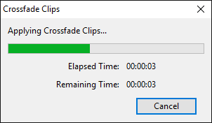
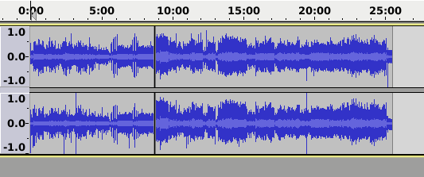
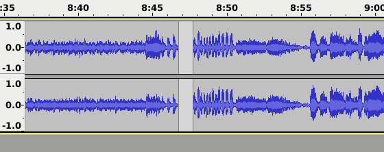
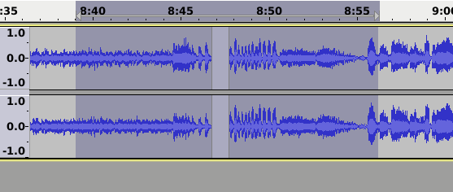
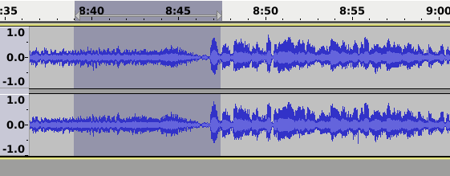
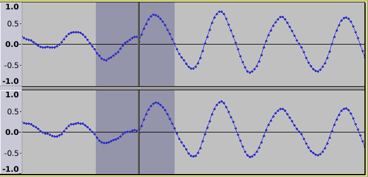
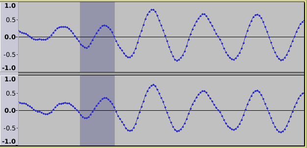

Crossfade Clips
Crossfade Clips applies a simple crossfade to a selected pair of clips in a single audio track.
- Accessed by:
- There are no parameters to set for this effect; the effect operates on the audio that is currently selected.
- If the crossfade takes an appreciable time, a progress dialog will appear as below:
- 
- Crossfade Clips progress dialog
Instructions
- Place two audio clips into the same track.
- Select (approximately) the same amount of audio from the end of one clip and the start of the other.
- Apply the effect.
- The selected regions will be crossfaded.
Note, the audio clips do not need to be touching. Any white-space between the clips is ignored.
If the selected region is continuous audio with no splits, the first half and last half of the selected audio will be crossfaded.
Advanced Tip: A discontinuity in a waveform, such as a large click, may be smoothed by applying a short crossfade across the glitch.
Limitations
These should not occur in normal usage:
- There may be no more than two clips selected in each channel.
- The selection may not start or end in white-space.
Examples
Example of using the effect for a simple crossfade
1) Place your audio clips end to end in a track.
- 
2) Zoom in a bit.
- 
3) Select the part that you want to crossfade (does not matter if the tracks are right up against each other or not - just select the parts to crossfade).
- 
4) Select the .
5) Simple crossfade completed
- 
Example of using the effect to repair a glitch
You can use Crossfade Clips to fix glitches when there are no convenient zero crossing points for making a clean edit. 1) Audio surrounding the glitch is selected
- 
2) Using repairs the glitch.
- 